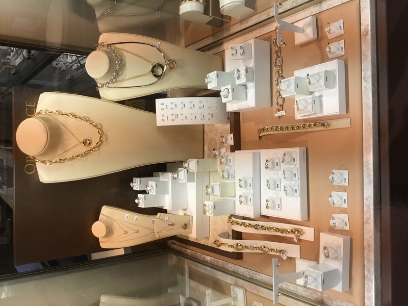
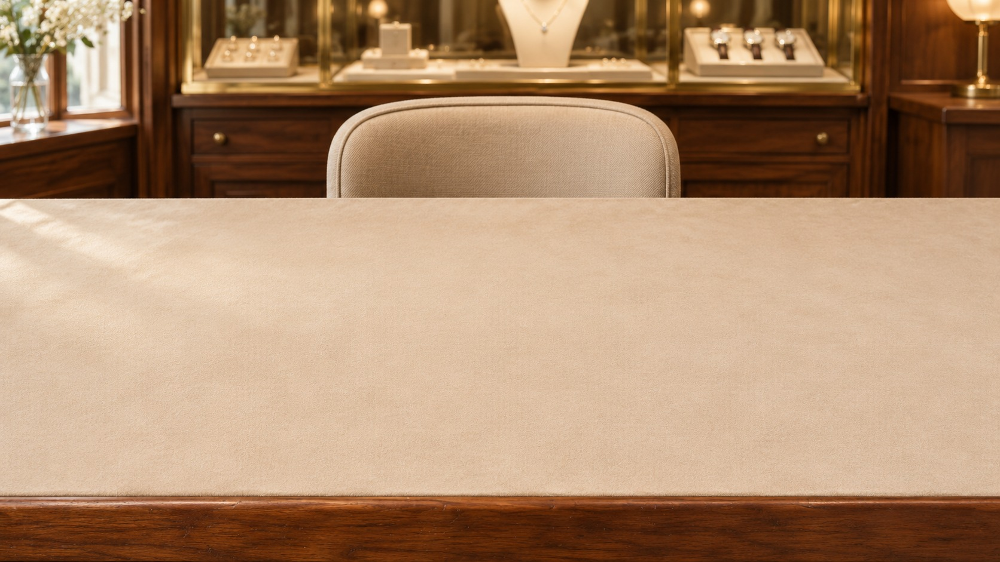
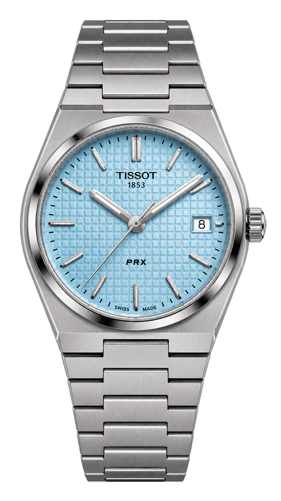

Bijoux & pierres pr�cieuses
L'or, l'argent, l'�clat du diamant et la couleur des pierres. Des pi�ces � offrir, � porter et � transmettre.
Trouver votre bijou

Fond�e par Alexandre Petit en 1948, notre bijouterie familiale transmet son savoir-faire de p�re en fils, de Michel � Cyril Petit.
Visiter la boutique
L'or, l'argent, l'�clat du diamant et la couleur des pierres. Des pi�ces � offrir, � porter et � transmettre.
Trouver votre bijou
D�couvrez notre s�lection de montres et b�n�ficiez de conseils en boutique.
Choisir votre montreCr�ation de bijoux sur mesure et r�paration de bijoux et de montres toutes marques.
Un bijou sur mesure, imagin� avec vous et r�alis� dans notre atelier.
Diamants, rubis, saphirs, �meraudes : b�n�ficiez de notre connaissance des pierres pour choisir votre bijou.
Apportez vos bijoux et montres en boutique pour �tudier leur r�paration, quelle que soit la marque.
Oui. La maison dispose d'un atelier de cr�ation et propose de fabriquer un bijou selon vos d�sirs. Un �change en boutique permet de pr�ciser votre projet.
Un service de r�paration de montres et de bijoux toutes marques est propos�. Contactez la boutique ou pr�sentez votre pi�ce pour conna�tre les possibilit�s de prise en charge.